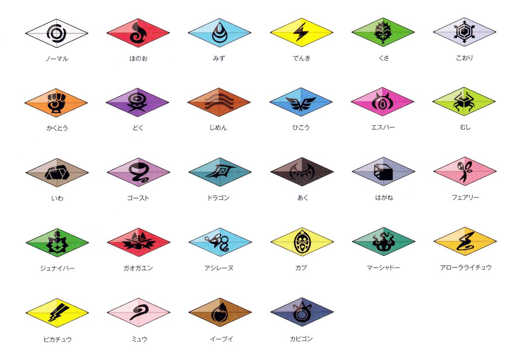

Desafio da Ilha:
Diferente de outras regiões, Alola não possui Ginásios Pokemon, ao invés disso os treinadores participam do Desafio da Ilha. O Desafio da Ilha envolve viajar pelas quatro ilhas principais de alola e completar diversos desafios em cada uma delas, para se tornar o treinador mais forte conhecido como o Campeão do Desafio da Ilha. Depois de cada desafio os treinadores recebem um Cristal Z do desafio correspondente, provando que venceram o desafio.

Os participantes do Desafio da Ilha recebem um amuleto do desafio para identificá-los; esses participantes são chamados de desafiantes. O Desafio da Ilha consiste em várias provas em cada uma das quatro ilhas da região de Alola, sendo que cada uma delas é geralmente liderada por um Capitão. As provas não se limitam a batalhas Pokémon; elas podem envolver a busca por itens específicos ou testes de conhecimento, entre outras tarefas. Todas as provas são desafios difíceis que exigem que os Treinadores provem o seu valor. Para concluir a prova, o Treinador deve derrotar um Pokémon Totem em uma Batalha SOS, na qual o Pokémon Totem pode chamar um Pokémon aliado para ajudá-lo. Alguns Pokémon Totem conseguem chamar mais de um aliado. Afirma-se que existem 8 provas ativas simultaneamente, embora nem todas sejam necessariamente supervisionadas por um Capitão.
O desafio final de cada ilha é chamado de Grande Desafio. No Grande Desafio, o Treinador deve batalhar contra o Kahuna da ilha. Ao concluir o Grande Desafio de uma ilha, o Treinador é reconhecido por ter superado todos os desafios daquela ilha e pode seguir para a próxima. A conclusão de cada desafio rende ao participante um carimbo em seu Passaporte de Treinador.
Anteriormente, após concluir todos os quatro Grandes Desafios, o participante tinha a tarefa de enfrentar os quatro Kahunas das ilhas em sequência no topo do Monte Lanakila, em um formato semelhante ao da Elite dos Quatro de outras regiões. O participante que concluía o Desafio das Ilhas e derrotava todos os quatro Kahunas neste desafio final recebia o título de Campeão do Desafio das Ilhas. Ao contrário dos Campeões das Ligas Pokémon, pode haver múltiplos Campeões do Desafio das Ilhas.
A seguir tem uma Tabela com os atuais Desafios, seus capitães, onde ficam e os Kahunas das ilhas:
| ILHA | DESAFIO | CAPITÃO | Localização | KAHUNA |
|---|---|---|---|---|
| MELEMELE | Normal | Ilima | Caverna Verdejante | Hala |
| AKALA | Água | Lana | Ladeira Brooklet | Olivia |
| Fogo | Kiawe | Vulcão Wela | ||
| Planta | Mallow | Selva Exuberante | ||
| ULA'ULA | Elétrico | Sophocles | Observatório de Hokulani | Fulano |
| Fantasma | Acerola | Mercado Megabarato abandonado | ||
| PONI | Dragão | - | Grande Cânion de Poni | Hapu |
| Fada | Mina | Vila Seafolk |